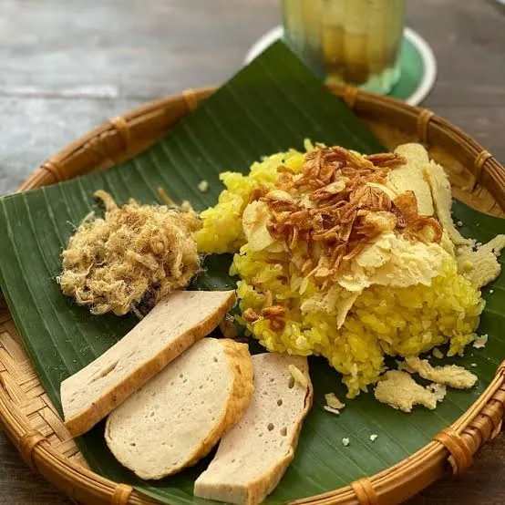
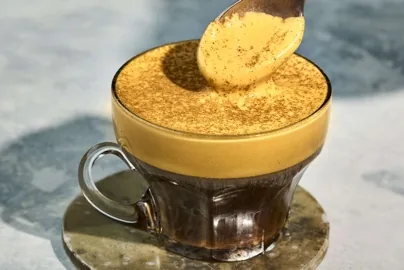
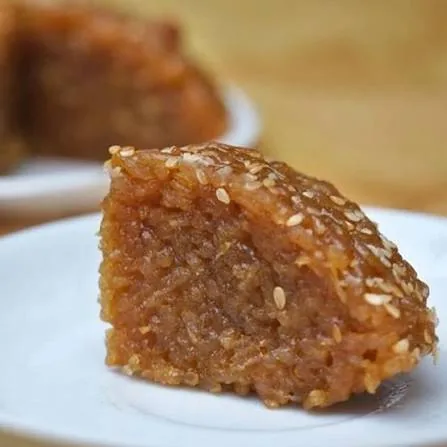

VIETNAM · FOOD GUIDE
Bon App
Aldo
The guide pour reconnaître les spécialités, comprendre les mots du menu et ne rien manquer pendant le voyage !
45 spécialités
54 mots utiles
3 grandes régions
À TABLE
Que veux-tu découvrir Aldo?
Chaque fiche indique le nom vietnamien, la traduction, les ingrédients, l’origine et une estimation des calories.

18 découvertes
🍜 Plats
Les incontournables à découvrir du Nord au Sud.
Explorer →
11 découvertes
🥢 Snacks
Street food, petites bouchées et encas vietnamiens.
Explorer →
9 découvertes
🧋 Boissons
Cafés, thés et boissons fraîches emblématiques.
Explorer →
7 découvertes
🍮 Desserts
Douceurs, chè et gâteaux vietnamiens.
Explorer →DÉCODER LE MENU
Deux glossaires pour s’y retrouver
Recherche un mot vietnamien entendu au restaurant ou pars d’un mot français pour retrouver son équivalent.